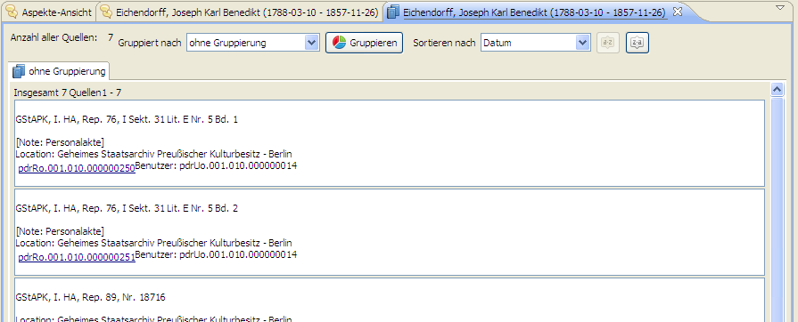

Auf der allgemeinen Beschreibung der Baumansicht aus Kapitel 6.2.1 aufbauend, wird nun auf spezielle Funktionen der Baumansicht eingegangen. Für die in der Baumansicht integrierten Recherche-Werkzeuge sei auf das eigenständige Kapitel 10 verwiesen.
Ähnlich wie in der Aspekte-Ansicht, lassen sich auch in der Baumansicht mehrere Filter ein- und ausstellen. Diese filtern jedoch nicht Aspekte, sondern Objekte, z.B. Personen oder Quellen. Um einen Filter anzuwenden, genügt ein Rechtsklick in den jeweiligen Objektbaum und die Wahl einer Einschränkung in der sich unter "‘Filter"’ öffnenden Filterliste. Daraufhin werden nur noch alle Objekte, welche dieser Einschränkung unterliegen in der Baumansicht angezeigt. Alle aktivierten Filter sind in der Filterliste mit einem schwarzen Häckchen markiert und können durch erneute Anwahl wieder deaktiviert werden.
Unabhängig davon welche Perspektive im Ansichtsfeld gewählt ist, können mehrere Objekte - wie z.B. in Browsern üblich - parallel in verschiedenen Tabs geöffnet werden. Muss ein Benutzer beispielsweise beim Aspekteanlegen oft zwischen mehreren Personen hin- und herwechseln, so kann er diese einfach jeweils in einem Tab öffnen und vermeidet so das ständige Navigieren durch die Baumansicht und Personenöffnen. Durch einen Rechtsklick auf die in einem Tab zu öffnende Person und der Wahl "‘Aspekte in neuem Tab öffnen"’, wird je nach aktueller Perspektive ein Tab erzeugt, der eine Aspekte-Ansicht (mit all ihren Funktionalitäten) der Person beinhaltet.

Eine weitere Funktion ist die Anzeige aller im Editor vorhanden Quellen, auf die Aspekte einer Person referenzieren. Wiederum ein Rechtsklick auf die gewünschte Person und ein weiterer Klick auf "‘Quellen in neuem Tab öffnen"’ öffnet einen Tab, welcher in Aspektform eine Liste der Quellen darstellt.

Sämtliche Tabs lassen sich ähnlich wie in Browsern per Drad-and-Drop anordnen und durch ein Klick auf das "‘x"’ wieder schließen.